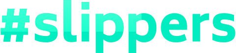

Build reusable components in Django without writing a single line of Python.
$ pip install slippers{% #quote %} {% quote_photo src="/project-hail-mary.jpg" %}
{% #quote_text %} “I penetrated the outer cell membrane with a nanosyringe." "You poked it with a stick?" "No!" I said. "Well. Yes. But it was a scientific poke with a very scientific stick.” {% /quote_text %}
{% #quote_attribution %} Andy Weir, Project Hail Mary {% /quote_attribution %}{% /quote %}